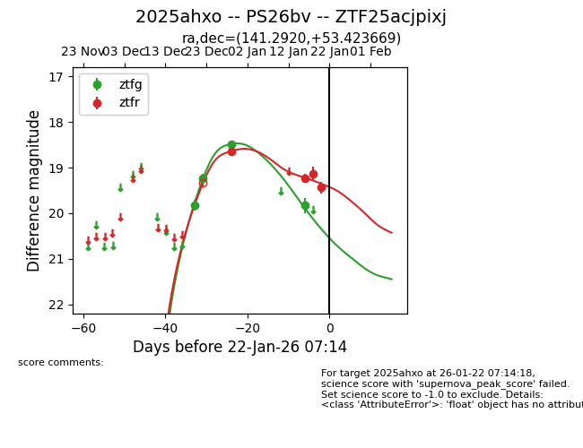
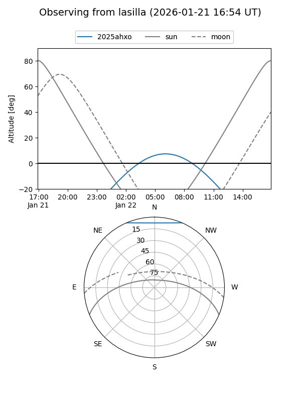
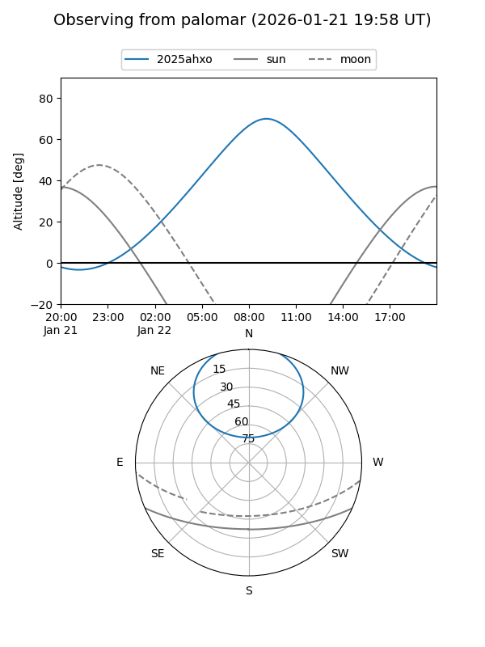
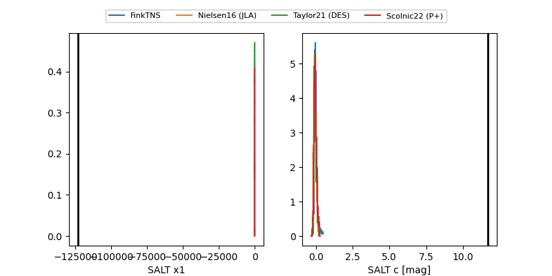

2025ahxo
Target 2025ahxo at 2026-01-16 09:35
Aliases and brokers:
FINK: link
Lasair: link
ALeRCE: link
TNS: link
YSE: link
alt names
ZTF25acjpixj (ztf,fink_ztf)
2025ahxo (tns,yse)
PS26bv (panstarrs)
Coordinates:
equatorial (ra, dec) = 141.2920,+53.42367
equatorial (HMS+DMS) = 09:25:10.08,+53:25:25.21
galactic (l, b) = (163.4691,+44.09404)
Flags:
Photometry:
last ztfg=19.83, ztfr=19.24
4 ztfg, 2 ztfr detections
Lightcurve

Visibility


Additional plots
